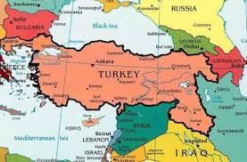

Abstract: This paper discusses the importance that cultural heritage has for Norwegians of Turkish descent in negotiating both their belonging and the concept of home. The role of heritage in making and crossing the boundaries of ethnicity is also discussed. I argue that Norwegian Turks have developed a multi-layered sense of belonging based on identification with groups and places located both in Turkey and in Norway. They participate in Norwegian society while identifying themselves as Turks, and the negotiation of cultural heritage contributes to presenting a consistent image of themselves as they adopt common Norwegian lifestyles.
Keywords: Belonging, Cultural Heritage, Turkey, Norway, Alevi, Sunni.
Summary: I. INTRODUCTION; II. FROM TURKEY TO NORWAY; III. NORWEGIAN TURKS IN DRAMMEN; IV. ETHODOLOGY; V. HERITAGE AND BELONGING. BOUNDARY MAKING AND CROSSING; V.1. Dual Belonging; V.2. DUAL(non)belonging; V.3. Heritage; boundary making and crossing; VI.COSCLUSIONS.
